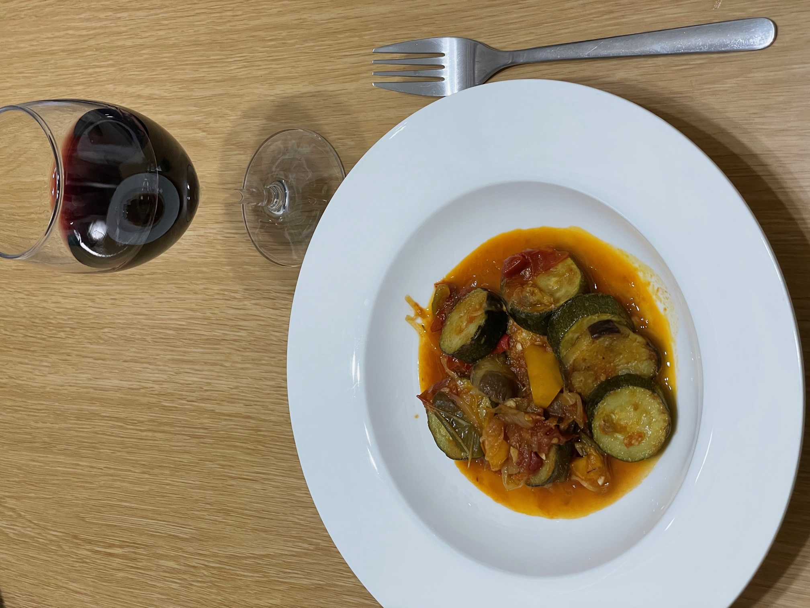

夏野菜のラタトゥイユ
山村拓史
材料
- トマト
- パプリカ
- ズッキーニ
- 玉ねぎ
- なす
- にんにく
- オリーブオイル
- タイム
- ローリエ
- 塩
- こしょう
作り方
- トマトは４等分に切り、ナスとズッキーニは皮をむきスライスする
- 玉ねぎをスライスして、事前に電子レンジで温めて柔らかくしておく
- パプリカは薄くスライスしておく
- 鍋にオリーブオイルを温め、玉ねぎとパプリカを加える
- 玉ねぎが飴色になったらトマト、刻んだニンニク、タイムとローリエを加える
- 塩・コショウをし、鍋にふたをして45分間煮る
- その間にナスとズッキーニを別々の鍋でオリーブオイルで15分炒める
- 柔らかくなっていることを確認してトマトの鍋に加え、弱火で10分煮込む
- 必要ならさらに塩・コショウで味をととのえて出来上がり